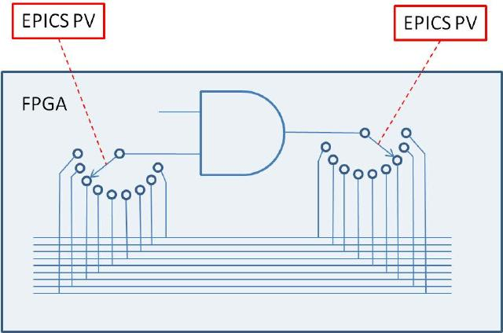
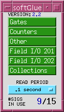
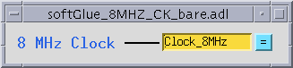
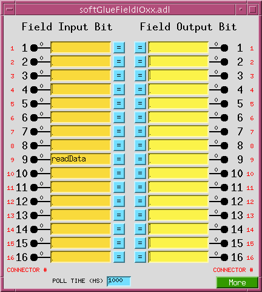
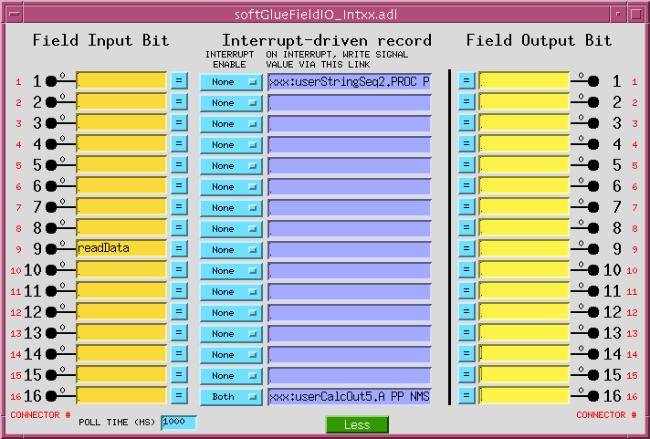
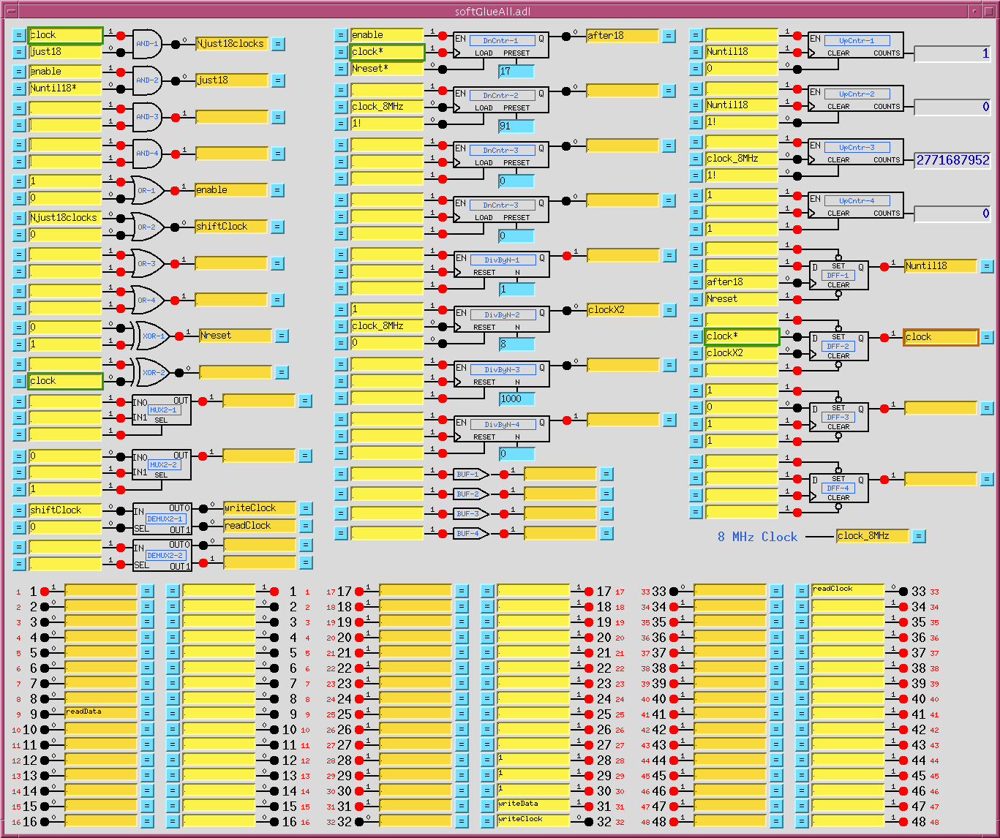
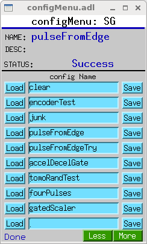
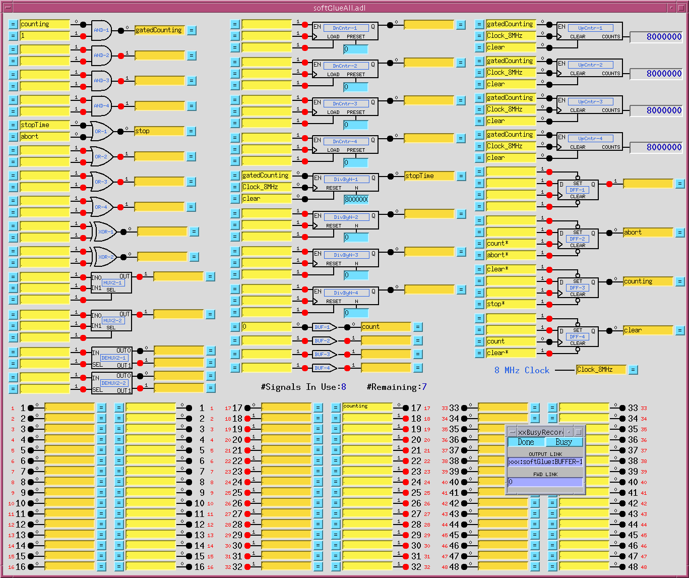
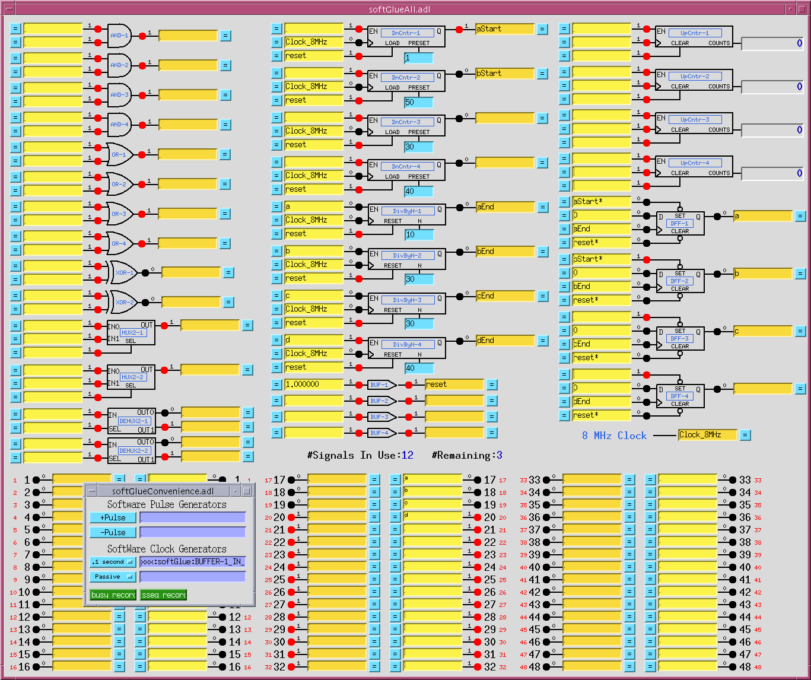
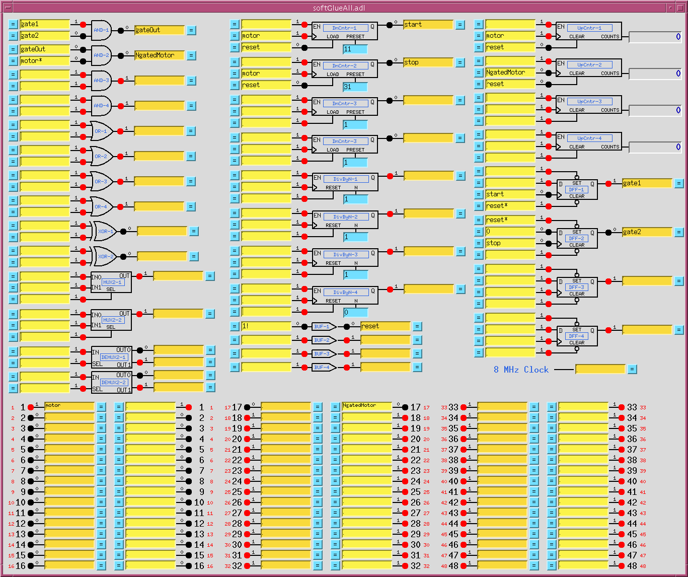

The synApps softGlueZynqZynq module (v0.1)
Table of Contents
Overview
The synApps
softGlueZynqZynq module enables EPICS users
and application developers to construct small, simple, digital electronic
circuits, and to connect those circuits to field wiring, all by writing to EPICS
PV's. Because the circuits and field connections are defined entirely by EPICS
PV's, they can be autosaved
and restored, saved as text files (for example, as configMenu
files), emailed from one user to another, etc. softGlueZynq also provides safe (throttled) user
control over how hardware interrupts are generated by field I/O signals, and how
they are dispatched to cause EPICS processing. (Interrupts are not supported yet.)
The name softGlue was intended to suggest glue electronics implemented
by software, where glue electronics means those little bits of digital circuitry needed to
connect two or more larger pieces of digital electronics into a working whole. softGlueZynq
is a rendition of softGlue for the Xilinx Zynq device , which is the combination of an FPGA and
a processor running Linux.
softGlueZynq does this by loading the Zynq FPGA with a predefined collection of circuit
elements (logic gates, counters, flip-flops, etc.), whose inputs and outputs are connected to
switches controlled by EPICS PV's. softGlueZynq provides a user interface for controlling those
switches, allowing inputs and outputs to be marked with user-specified names, and connecting or
driving inputs and outputs according to those names.
Here's the underlying idea, schematically:

Requirements
To use softGlueZynq, you must have the following hardware and software:
Hardware
softGlueZynq is intended to be useable with any Zynq device, and will certainly be
ported to the MicroZed 7020, and to one or more versions of the PicoZed, but the databases and
MEDM displays supplied in this version are for the MicroZed 7010. Other devices have not yet been
tested.
Software
- The EPICS asyn module, version
4.6 or higher.
- The EPICS extension, msi,
version 1-5 or higher.
This tool is needed to build some softGlueZynq databases.
- MEDM, or CSS-BOY, or caQtDM, or the ability to adapt some other display
manager or Channel Access client to implement softGlueZynq's user interface.
Some of the softGlueZynq databases, displays, and examples presume the availability of
synApps modules such as calc, busy, and std, but these are not needed
for any essential feature of softGlueZynq.
You do not need to be able to program the Zynq FPGA. In the default implementation,
the FPGA content is programmed automatically into the module at IOC-boot time. A Xilinx
.bin file is included with softGlueZynq for this purpose. softGlueZynq loads the FPGA on every
IOC boot, though it's also possible to reboot the IOC without affecting a running FPGA.
If you have a copy of the Xilix Vivado software, you can load your own custom FPGA content into
the module, and use softGlueZynq to talk to it. softGlueZynq was designed with this use in mind,
though we don't yet have documentation on how it's done.
Capabilities
Here are a few examples of the sorts of things that can be accomplished with
softGlueZynq and EPICS:
- With no programming at all, softGlueZynq functions simply as a 16-bit digital I/O module.
- Conditionally send a trigger signal to a detector after every N steps of a stepper motor.
- Conditionally send a trigger signal to a detector after every N(i) steps of
a stepper motor, where N(i) is an array of step-interval numbers. (This requires
interrupt support, which hasn't been written, or a custom FPGA component, which also
hasn't been written.)
- Gate a detector off during the acceleration and deceleration portions of a
steppermotor's motion.
- Send a trigger to a detector precisely 23 ms after sending a trigger to a shutter.
- Conditionally trigger the execution of an EPICS record on the change of state
of an external signal. (Requires interrupt support which has not yet been written.)
- Implement an extraordinarily smart trigger signal for an oscilloscope.
- Implement efficiently a timer useable by EPICS software, with a time resolution that is
much better than the system clock's resolution. (With this, you can for example cause an
EPICS database to wait for 0.7 ms.) (Requires interrupt support which has not yet been written.)
Implemented circuit elements
In this version of softGlueZynq, the FPGA is programmed with the following circuit
elements:
- Four AND gates
- Four OR gates
- Four noninverting buffers
- Two XOR gates
- Four D flip-flops
- Two 2-input/1-output multiplexers
- Two 1-input/2-output demultiplexers
- Four 32-bit counters
- Four 32-bit preset counters
- Four 32-bit divide-by-N circuits
- Four 32-bit up/down counters
- Four gate&delay generators
- Two quadrature decoders
- 8 field-input bits
- 8 field-output bits
- One 10MHz clock signal
- One 40MHz clock signal
In addition to the above listed components, softGlueZynq includes the ability to handle
analog values in much the same way as it handled digital values. This is accomplished by
encoding analog values as bit streams that can be put on the softGlueZync signal bus. This
capability is currently rudimentary: only proof-of-principle components have been written.
Installation and deployment
The simplest way to deploy softGlueZynq is to download and build the module iocZed,
which builds much of synApps and softGlueZynq and runs it on the Zynq's ARM processor.
How to get the software
softGlueZynq and iocZed are on on GitHub
(softGlueZynq)
(iocZed)
Building softGlueZynq
- Edit
softGlueZynq/configure/RELEASE, to specify the paths to EPICS_BASE,
and ASYN.
- Edit
iocZed/configure/RELEASE, to specify the paths to EPICS_BASE,
ASYN, and SOFTGLUEZYNQ.
- Run
make in the top-level directories of softGlueZynq and iocZed, using the
same make executable used to build EPICS base.
The softGlueZynq build will issue a warning that it can't expand all macros
in substitution files. This is not an error; unexpanded macros are intended
to be defined at boot time. (Note that version 1-4 of msi
returns an error, which causes the softGlueZynq build to fail, after writing a
database file that contains unexpanded macros.)
Deploying softGlueZynq to an IOC
Configuring softGlueZynq (editing softGlueZynq.iocsh)
User Callable Functions:
-
initZynqSingleRegisterPort(char *portName, int AXI_BaseAddress)
Initialize softGlueZynq signal-name support.
Example:
initZynqSingleRegisterPort("AXI0", 0x43C00000)
User's Manual
Most of the essential user-interface information — how to connect signals, what the display
elements mean, etc. — is contained in the descriptions of the "User Menu" and "AND" sections
below. The remaining sections are mostly for completeness, though some circuit elements do require
further explanation, and the counter sections introduce new display elements for registers
containing decimal numbers.
We're going to have a little trouble with the meanings of "input" and "output", because they
imply a viewpoint, and because we're going to be taking three different viewpoints: those of EPICS
records, circuit elements, and field-wiring connectors. Usually, in EPICS, we think of an output as
something to which an EPICS record can write, but that definition would be awkward here, because it
would eventually require us, for example, to refer to the output of an AND gate as an "input". You
just can't discuss digital circuitry intelligibly from that viewpoint.
Therefore, in this documentation, "input" and "output" will normally be from the viewpoint of one
of the circuit elements we'll be wiring. Field I/O will be an exception, because it's most
conveniently discussed from the viewpoint of the field-wiring connector.
MEDM user interface
User Menu

softGlueZynqMenu.adl is the top softGlueZynq display, which serves mostly to call up other
displays. The menu labelled READ PERIOD specifies the period at which the values of
all signals are sampled for display to the user.
Most softGlueZynq displays are not interrupt driven. (That would be a disaster, because
inevitably some signals will change state at high frequency.) So, the states of inputs and outputs
must be sampled periodically, for display to the user.
We've found that it's confusing for users if the poll period is greater than
around 1 second. We've also found that polling everything at .1 second uses only a few
percent of an MVME2700 CPU.
AND

On the left of the AND gate are the inputs, each comprised of a blue "= button", a yellow
text-entry field, a number, and what's intended to look like a red LED. On the right are
essentially the same things in reverse order, but an output's text-entry field is a different
color. The text-entry fields are used to connect signals together, and the color difference is
intended to remind you of the only rule governing signal connections: if you connect two or more
outputs together, those outputs won't work.
softGlueZynq outputs are engineered to ensure that you can't break anything by connecting
outputs together, but the circuit won't be useful until you fix the error, because the states of
outputs connected together are undefined. Currently, softGlueZynq doesn't signal this error by
putting offenders into an alarm state.
The yellow text-entry box controls an input. You have three options:
- Leave empty.
Inputs with empty text-entry boxes default to logic value 1.
- Enter a string that begins with a number.
This directly writes a logic value (optionally, a pulse) to the input.
softGlueZynq will parse everything that looks numberish, and convert to a floating point value. This
sets the input to a logic value: 0 if the nearest integer to the converted value is zero, 1 if it's
not.
Allowing floats, and extra characters after the number makes it easier to drive softGlueZynq
inputs with calcout records, replies from serial devices, etc.
The strings "0!" and "1!" (possibly followed by other ignored characters) direct softGlueZynq to
write a pair of logic values: "0!" writes "0" followed immediately by "1"; "1!" writes "1" followed
immediately by "0". The time interval between writes is system dependent, and not at all
guaranteed, but it should be much smaller than the interval you could achieve from separate writes.
On an MVME2700, I measure around 6 μs.
- Enter a string that begins with something other than a number.
This names the signal, and connects it to all other signals with the same name (or with the
same name followed by '*', as described below). Case is significant in comparing
signal names.
Note that a "signal", as the word is used in this documentation, is a named connection
between softGlueZynq circuit elements. It might be more intuitive to think of a "signal" as a wire,
to avoid confusing it with, say, field I/O.
Note, if you're using more than one IP-EP20x module, that you can't connect signals implemented in
different IP-EP20x modules using their text-entry boxes. To accomplish this, you must connect the signals to
field I/O and make a physical connection.
If you want to use the inverted value of a signal for input to some component, append
'*' to the signal name. This doesn't change the signal that the input is
connected to, but just tells softGlueZynq to run the signal through an inverter before applying it
to the input. Note that output signal names may not end with '*'.
In MEDM, you can use Drag-And-Drop to connect a named signal to some other
signal. When you drop, MEDM will put the PV name of the signal you dragged
from. When you press <Enter>, softGlueZynq's device support will write the
signal name of the source PV to the destination PV.
In caQtDM, you can select the text of a signal name, and use Copy/Paste
(^C/^V) to copy the signal name from one text-entry box to another.
Whatever option you choose, you can define at most fifteen different signal names. When you try
to define the 16th name, softGlueZynq will erase whatever you wrote, and put the record into the
"INVALID" alarm state. (But note, for example, that reset and reset* are
not different signal names, because the trailing '*' is not regarded as part of the
name; it merely describes how the signal should be used.)
Text-entry boxes for output signals won't accept names beginning with a number, or ending with
'*'. (softGlueZynq will simply strip the offending characters, and leave the rest.)
A signal name beginning with a number can only be a direct-write command; it cannot connect
things together, because the leading number would be misinterpreted by input-signal-name parsing as a
direct-write command. Output-signal names ending with '*' are logically sensible, but are
not permitted; this simplifies the implementation of '*' appended to input-signal names.
A signal's blue "= button" is used to find all other signals to which the signal is connected.
While a signal's "= button" is pressed, input signals connected to it are bordered in green, and output
signals connected to it are bordered in orange. If you ever see two or more orange borders at
the same time, you have outputs connected together, and your circuit won't work.
The little red and black filled circles (LED's), and the numbers next to them, display the states
of their signals. These display elements are updated at the period specified in the
softGlueZynqMenu.adl display. If you want the EPICS PV name corresponding to a signal's
logic value, this is the PV name to use.
For completeness, here's the truth table for an AND gate:
| input1 | input2 | | output
|
|---|
| 0 | x | | 0
|
| x | 0 | | 0
|
| 1 | 1 | | 1
|
'x' means "either 0 or 1".
OR

| input1 | input2 | | output
|
|---|
| 0 | 0 | | 0
|
| 1 | x | | 1
|
| x | 1 | | 1
|
BUFFER

The purpose of the buffer element is to permit EPICS to drive several softGlueZynq inputs
by writing to a single PV, without using up a more valuable circuit element, such as the XOR gate below.
INVERTING BUFFER

There is no inverting buffer - or any other inverting gate - in softGlueZynq. Signal inversion is
accomplished by appending '*' to the name of a signal used as as input to any logic element, as
demonstrated above for the buffer element. Note that '*' appended to the name of an output
signal will be removed.
XOR

| input1 | input2 | | output
|
|---|
| 0 | 0 | | 0
|
| 0 | 1 | | 1
|
| 1 | 0 | | 1
|
| 1 | 1 | | 0
|
D FlipFlop

The input signal labelled ">" is the "clock" input. Unlike other signals, clock inputs are
edge sensitive. All clock inputs in softGlueZynq act on the rising edge of the input signal.
The open circle ("bubble") in the SET and CLEAR inputs' signal paths indicate
that these signals are inverted before being used. Thus, applying '0' to the CLEAR input causes
the output to be "cleared" (given the value 0).
| SET | CLEAR | D | > (clock) | | Q
|
|---|
| 0 | 0 | x | x | | undefined
|
| 0 | 1 | x | x | | 1
|
| 1 | 0 | x | x | | 0
|
| 1 | 1 | any | rising edge | | DBEFORE (value D had immediately before the rising edge of the clock signal)
|
2-Input Multiplexer

When SEL==0, OUT=IN0. When SEL==1, OUT=IN1.
2-Output Demultiplexer

When SEL==0, OUT0=IN, and OUT1 is undefined (currently
0). When SEL==1, OUT1=IN, and OUT0 is undefined (currently
0).
Up Counter (32-bit Counter)

EN==1 enables the clock (">") input, whose rising edge increments the counter value.
Down Counter (32-bit Preset Counter)

EN==1 enables the clock (">") input, whose rising edge decrements the counter value.
When LOAD==1 the counter is loaded with the value applied to the PRESET
input. While LOAD==1, the counter does not count down. While LOAD==0 and
EN==1, a rising edge at the clock input decrements the counter. When the counter value
reaches 0, the output Q goes to 1; the next rising edge of the
clock returns Q to 0 (regardless of the states of EN and
LOAD).
32-bit Divide By N

EN==1 enables the clock (">") input. Every N'th
rising edge of the clock drives Q to 1. The next
rising edge returns Q to 0. This behavior produces the correct number of rising edges of
the output signal, but it does not guarantee the same number of falling edges.
Therefore, using an inverted copy of the output to clock downstream electronics
will in some cases have inconsistent results.
When N==0, the divide circuitry is bypassed, and the
clock is connected directly to Q. This is an error; the output
should still be gated by the EN signal.
In softGlueZynq version 2.1 and earlier, the RESET signal doesn't do
anything. Beginning with softGlueZynq 2.2, the RESET signal loads the
counter with N, so that Q will be driven to
1 after N rising edges of the clock.
RESET does not clear the output Q. If Q
is 1, it will be cleared on the first rising edge of the clock.
8 MHz internal clock

An 8 MHz clock derived from the IndustryPack clock is available to softGlueZynq
circuitry as a free standing output.
Field I/O

This display allows you to connect field I/O signals to each other and to softGlueZynq circuits.
Note that a "Field Input Bit" looks like and behaves as a softGlueZynq output, because what
you're actually controlling is the output of a buffer driven by the field-input signal. Similarly,
a "Field Output Bit" looks like and behaves as a softGlueZynq input, because you're actually
controlling the input of a buffer that drives the field-output signal.
The signals in this display are the field inputs or outputs connected to pins 1-16, 17-32, or 33-48
on the IP-EP201's ribbon connector. The IP-EP201 board supports 48 I/O bits, and permits them to be set
for input or output in groups of 8.
"POLL TIME (MS)" specifies the period at which softGlueZynq reads the I/O ports
for user-display purposes, and for executing the EPICS link associated with
non-interrupt-enabled I/O bits (see next section). If an I/O bit has changed
value since the last read, softGlueZynq processes the display record associated with
that bit, so the user will see the new value. If an I/O bit is enabled to
generate interrupts, as described in the next section, the bit will be read
immediately by the interrupt handler, so "POLL TIME" will not matter for that
bit.
Note: If you have a field input connected to an FPGA component, the component
will react to a change in the input value within nanoseconds. I/O polling is
not involved at all in the logic connection.
You can change the "CONNECTOR #" strings in this display
— for example, to support a custom signal-breakout module, or to give the
I/O signals application-specific names. The strings are defined in
softGlueZynqApp/Db/softGlueZynq_FPGAContent.substitutions, as the macro
IOPIN supplied to softGlueZynq_FieldOutput.db and
softGlueZynq_FieldInput.db. In softGlueZynq 2.3.1, field I/O displays
leave room for longer strings, and there is a an autosave-request file for
these PVs.
During a VME power cycle, and during a VME reset, field outputs are first put into a high
impedance state, then are driven to ground, and finally are driven to values controlled by the user
circuit. If user-circuit field-outputs are autosaved, they will be restored during the boot;
otherwise, they will default to logic 1 (+5V for TTL).
During a soft reboot (that is, when the vxWorks "reboot" command is given in the ioc console),
field outputs will maintain their values.
Field I/O Interrupt support

Field-input lines supported by softGlueZynq can generate interrupts on rising edges,
falling edges, both, or neither. You control this by setting the "INTERRUPT ENABLE"
menu to "Rising", "Falling", "Both", or "None", respectively. Field output lines can also
generate interrupts: if a bit is designated as an output, the output is connected also to
the input, and to the input's interrupt-generation circuitry.
Interrupts are throttled by softGlueZynq's interrupt handler. If more than four interrupts have
occurred and not been handled, softGlueZynq will disable interrupts from the offending bit, by setting
the bit's "INTERRUPT ENABLE" menu to "None", and it will direct your attention to the change by
drawing a red box around the menu control. The box will be erased the next time the menu is written
to.
The number of unhandled interrupts that triggers throttling is adjustable by modifying
drvIP_EP201.c. You must change the definition of MAX_IRQ, and you must also ensure
that the asyn ring buffers for interrupt driven PV's is larger than MAX_IRQ. (The
default ring buffer size is 10. Asyn documentation describes how to change it.)
When an interrupt occurs, you can have the signal value written to an EPICS PV, by writing an
EPICS link description into the purple box labelled "ON INTERRUPT, WRITE SIGNAL VALUE VIA THIS
LINK", as shown for input 16 in the above screen shot.
For interrupts that may occur too closely spaced in time for softGlueZynq's normal
interrupt-response mechanism to handle reliably, see "Custom Interrupt Handlers", below.
About EPICS links
In softGlueZynq displays (and in most other synApps displays), standard EPICS links are displayed as
purple text-entry boxes, in which you describe the link you want to make. For purposes here, an
EPICS link description is the name of an EPICS PV, followed by one of the following link attributes:
| NPP | (default) write value, but do not cause processing.
|
| PP | write value and cause processing (if the record containing the PV is "Process
Passive", which means that it's SCAN field has the value "Passive").
You should use this attribute unless you have some reason not to use it.
|
| CA | write value and let the record containing the PV decide whether or not to process.
|
EPICS will tack on the string " NMS". This alarm-propagation attribute is not something
end users need to worry about.
For example, to cause a link to write effectively to the top input of the first AND gate
(whose PV name is zzz:softGlueZynq:AND-1_IN1_Signal, you would write the following
into a purple box:
zzz:softGlueZynq:AND-1_IN1_Signal PP
If you only write the PV name, EPICS will supply the link attribute NPP, and your link
will write a value, but the value won't have any effect until the next time the record processes.
(For most PV's in softGlueZynq, the value written by an NPP link won't even be displayed until the
record processes.)
Note: if the link writes to a PV in a different IOC, the specified link
attribute will be ignored, and the attribute "CA" will be used instead.
Everything on one display, with the signal named "clock" highlighted so that all of its connections
are evident. A signal name gets this treatment when the "= button" next to an input or output is
pressed. Note that connections to inputs are bordered in green, and connections to outputs are bordered
in orange.

This display shows everything in softGlueZynq except interrupt support.
Convenience

This display controls two pulse generators implemented in EPICS, with links allowing them to
write to a softGlueZynq input (that is, to a yellow box), and, similarly, two clock generators
implemented in EPICS. The display also has MEDM related-display callups for two busy records,
The use of EPICS links (the purple boxes in the above display) is described above in
the section "About EPICS links", in the documentation of "Field I/O Interrupt support".
BusyRecord

This display controls the value, output link, and forward link of a busy record. In the
anticipated use with softGlueZynq, one would have some EPICS record outside of softGlueZynq set the busy
record to "Busy" (using a PP link), and arrange for a softGlueZynq interrupt bit (see "Field I/O
Interrupt support", above) to use its EPICS-output link to clear the busy record to "Done" (using a
CA link).
The use of EPICS links (the purple boxes in the above display) is described above in
the section "About EPICS links", in the documentation of "Field I/O Interrupt support".
It's important to set a busy record to "Busy" using a PP link, because the
purpose of a busy record is to represent some external processing as EPICS processing. This allows
EPICS' execution tracing to signal the completion of the processing. EPICS only traces processing
started or propagated with a PP link.
It's important to clear a busy record to "Done" with a CA link, because an EPICS PP link
will decline to process any record that is already processing. The busy record is written so that a
CA put will succeed in clearing it and causing its processing to appear done to EPICS.
Additional FPGA components
The following components are not in the standard softGlueZynq package, but in
add-on packages typically made to solve specific problems.
32-bit Up/Down Counter

EN==1 enables the clock (">") input. CLEAR==1 sets
the current count and the output value Q to zero. When
UP/DOWN==1 the counter counts up. LOAD sets the
current count to PRESET
Quadrature Decoder

This circuit converts a pair of digital quadrature signals A, B
(for example, signals from an encoder) into a pair of STEP, DIR
signals. A and B are samples on rising edges of the
CLOCK signal. If either have changed since the last rising edge,
the travel direction implied by the change is output to DIR, and a
pulse is output to STEP. The pulse width is equal to the period of
the CLOCK signal, and the input frequency may not be greater than
half the clock frequency.
Shift Register

This circuit converts from parallel to serial, or from serial to parallel.
For parallel-to-serial conversion, a number is written into the
LOADVAL register, and loaded by a positive-going pulse to the
LOAD input. On each rising edge of the clock input
>, the loaded value is shifted toward the most significant bit,
and the most significant bit is output to the Q output.
For serial-to-parallel conversion, the input D is sampled on the
rising edge of the clock input, and that value is shifted into the least
significant bit of the register.
Four-output demultiplexer

When SEL0==0 and SEL1==0, OUT0=IN, and other OUTs are undefined (currently 0).
When SEL0==1 and SEL1==0, OUT1=IN, and other OUTs are undefined (currently 0).
When SEL0==0 and SEL1==1, OUT2=IN, and other OUTs are undefined (currently 0).
When SEL0==1 and SEL1==1, OUT3=IN, and other OUTs are undefined (currently 0).
There are two copies of this add-on component:
- softGlueZynq_2_2_demux4.hex - the basic component, with all inputs and outputs
routed to signal names, as usual for softGlueZynq.
- softGlueZynq_2_2_demux4_HW.hex - the same component, but with multiplexer
outputs routed to signal names, as usual, and also hardwired to the last 16
field I/O pins. Thus, DEMUX4-1_OUT0 is connected to pin 33, DEMUX4-1_OUT1 is
connected to pin 34, ..., and DEMUX4-4_OUT3 is connected to pin 48.
Encoder Time Average circuit

This circuit is for general encoder support, and also for generating a time
averaged value of an encoder signal. Up/Down counters 1-4 are copies of the
32-bit Up/Down counter described above. Up/Down counter 5 is also a 32-bit
Up/Down counter, but it has no "Q" output. Instead, it has "Q8" and "C8"
outputs. Q8 is true whenever the 8 least significant bits are all zero. C8 is
a ripple carry bit, which allows the eight lsbits of this counter to be combined
with any 32-bit counter to make a 40-bit counter.
MagCmp-1 is a 32-bit magnitude comparator, which produces the signals "A>B"
and "A!=B" on the rising edge of the clock "SAMPLE". The component also
produces the signals "BCLOCK" and "BDIR" with the following circuitry, which
uses the "Q8" signal from Up/Down counter 5:

Saving and restoring circuits
softGlueZynq circuits can be saved and restored using autosave,
autosave's configMenu facility, BURT, or
any channel access client that can read and write PV's. configMenu is
particularly handy, because it's driven by EPICS PVs, and because it saves a
time-stamped backup copy of every file it overwrites.
Whichever method you use, you may need to clear softGlueZynq signal names
before loading a circuit, because loading over an existing circuit could
temporarily exceed the available number of signal names. (Alternatively,
you could simply load twice, and be confident that the second load will
succeed.)
Saving and restoring circuits with autosave's configMenu facility

If you have autosave R5-1 or higher, you can use configMenu to save and
restore circuits. Here are the steps needed to implement a menu of softGlueZynq
circuits, and to give the user a GUI display for saving and restoring them.
(In the following, SG is the name of this instance
of configMenu. The files it loads and saves will be named "SG_<config Name>.cfg". For examples, the
configMenu instance pictured above has files named "SG_clear.cfg", "SG_encoderTest.cfg", etc..)
- In the IOC's startup directory, create an autosave
request file, which I'll call "SGMenu.req", with
the following content:
file configMenu.req P=$(P),CONFIG=$(CONFIG)
file softGlueZynq_settings.req P=$(P),H=$(H)
- Uncomment the following line in the IOC's copy of
softGlueZynq.cmd:
dbLoadRecords("$(AUTOSAVE)/asApp/Db/configMenu.db","P=zzz:,CONFIG=SG")
- Add the following line to
st.cmd:
create_manual_set("SGMenu.req","P=zzz:,CONFIG=SG")
- Add an MEDM related-display entry to bring up the configMenu.adl display.
label="SGMenu"
name="configMenu.adl"
args="P=zzz:,CONFIG=SG"
softGlueZynq includes configMenu files (*.cfg) for standard example circuits
in the iocBoot/iocsoftGlueZynq directory. In actual use, these .cfg files would
be placed in your application's iocBoot/ioczzz/autosave directory. For more
information on configMenu, see the autosave documentation.
Saving and restoring circuits with BURT
The BURT request file softGlueZynqApp/op/burt/softGlueZynq.snap can be
used to save all softGlueZynq user modifiable PV's. For example, the following
command saves the state of softGlueZynq to the file myCircuit.snap.
burtrb -f softGlueZynq.req -DPREFIX=zzz:softGlueZynq -o myCircuit.snap
- "
-f softGlueZynq.req"
- specifies that the request file
softGlueZynq.req should be
used to specify the EPICS PVs whose values are to be saved. This file
contains lines like this: "PREFIX:AND-1_IN1_Signal", where
"PREFIX" is to be replaced by text specific to your ioc.
- "
-DPREFIX=zzz:softGlueZynq"
- specifies that
PREFIX
is to be replaced by zzz:softGlueZynq.
- "
-o myCircuit.snap"
- specifies that the saved PV names and values are to be written to the
snapshot file "
myCircuit.snap".
No doubt your PREFIX will be different from mine, but it should
be $(P)$(H) from your copy of softGlueZynq.cmd,
minus the trailing ':' from $(H). BURT needs the ':' to separate "PREFIX"
from the rest of the PV names it parses. If you defined H without a
trailing ':', you'll need to make some adjustment to satisfy BURT.
The following commands restore the circuit:
burtwb -f clearAll.snap
burtwb -f myCircuit.snap
The first command is often needed because there is a limit to the number
of signal names that softGlueZynq will accept. If you neglect to clear all
signals before restoring a circuit, the allowed number of signal names might
be exceeded during the restore, if new signal names are defined before old
signal names are deleted. (Alternatively, you could simply run the second
command twice.)
To restore example circuits included in the softGlueZynq module, or to
restore a snapshot file emailed to you by some other softGlueZynq user, you will
need to edit the snapshot file to change PV names such as
"zzz:softGlueZynq:AND-1_IN2_Signal" to PV names in your ioc, which
might look like "1ida:softGlueZynq:AND-1_IN2_Signal".
Example circuits
The following circuits have been tested and saved in BURT snapshot files, and
as configMenu .cfg files, as described above (see Saving and Restoring
Circuits). The snapshot files can be found in
softGlueZynqApp/op/burt; the .cfg files are in iocBoot/iocsoftGlueZynq.
Motor-pulse gate
Positive-going pulses can be gated with an AND gate, by applying the signal to one input of the AND gate,
and setting the other input to 0(1) to deny(allow) passage through the gate.
Negative-going pulses can be gated with an OR gate, by applying the signal to one input
of the OR gate, and setting the other input to 0(1) to allow(deny) passage through the
gate.
Gated scaler
Files:
softGlueZynqApp/op/burt/gatedScaler.snap or
iocBoot/iocsoftGlueZynq/gatedScaler.cfg
This circuit implements four counter channels, a time base to control
counting time, an overall gate, and additional circuitry to control
starting, stopping, and processing of the count-value records. Note
that the scaler is controlled by a busy record from the softGlueZynq
convenience database, so that client software can discover when counting
is finished in the standard EPICS way. See
softGlueZynqApp/op/burt/gatedScaler.txt for more details.

Four independent start-time/stop-time pulses
File: softGlueZynqApp/op/burt/fourPulses.snap or
iocBoot/iocsoftGlueZynq/fourPulses.cfg
This circuit produces four separate pulse signals, which start at
specified start-delay times after (the falling edge of) an initial start
pulse, and which last for specified pulse-length times. It uses four
DnCntr's to implement the start-delay times, and four DivByN's to
implement the pulse-length times. Times are specified as multiples of
the (125 ns) clock period (PRESET for the DnCntr's;
N for the DivByN's), and these numbers must be greater than
or equal to 1. The pulse sequence starts on the falling edge of the
signal BUF-1, written by a periodically scanned EPICS
record (one of the softGlueZynq convenience clocks). One spare signal name
is available, however, so the pulse sequence could also be started by an
external signal.

Motor-pulse accel/decel gate
Files: softGlueZynqApp/op/burt/accelDecelGate.snap or
iocBoot/iocsoftGlueZynq/accelDecelGate.cfg
(Non-softGlueZynq support in
softGlueZynqApp/op/burt/accelDecelGate_transform.sav.)
If you know the number of steps a stepper motor will move during its acceleration time, you
can easily arrange to deliver motor pulses to some external circuit only while the motor is
moving at constant speed. For a stepper motor controlled by the motor record, the number of
acceleration/deceleration steps, Na, can be calculated with the following
formula:
where, VBAS, VELO, ACCL, and MRES are
motorRecord fields.
The number of constant-speed steps, Nc, is then
where VALend and VALstart are the final
and initial values of the motorRecord VAL field.
The following circuit accepts negative-going motor pulses at input signal 1, gates out
the first 11 (the value of DnCntr-1_PRESET), and from then on sends motor
pulses to output pin 17 until a total of 31 (the value of DnCntr-2_PRESET) have
been sent. The circuit is reset by writing "1!" (positive-going pulse) to the input of BUF-1.
The circuit includes some diagnostics, and a mechanism for testing:
UpCntr-1 counts all motor pulses; UpCntr-2 counts gated
motor pulses. Both counters are reset by the same signal that resets the gate circuit.
- A manual reset is implemented using BUF-1. Writing "1!" to the input of BUF-1,
as shown, causes a short positive-going pulse to be applied to it, and thus to its output,
the signal named "reset".

Down counter DnCntr-1, and flipflop DFF-1, together produce a gate
signal that is 0 after a reset, and that goes to 1 after DnCntr-1_PRESET motor
pulses. Down counter DnCntr-2, and flipflop DFF-2, together produce a
gate signal that is 1 after a reset, and that goes to 0 after DnCntr-2_PRESET motor
pulses. We load the number of acceleration steps into DnCntr-1_PRESET, and the
number of acceleration steps plus constant-speed steps into DnCntr-2_PRESET.
AND-1 combines the gate signals produced above into a signal that is 1 while
the motor is moving at constant speed.
AND-2 gates the negative-going motor pulses, using what
was described in the "Motor-pulse gate" example as a
positive-going-pulse gate, by inverting the "motor" signal before
applying it to the gate.
Note that the down counters are clocked by (rising edges of) "motor", to produce the
signal used to gate "motor*". This choice avoids a race condition between simultaneous
rising edges of "gateOut" and "motor". (This circuit gates negative-going motor pulses, so
another way to make the point is to say that the trailing edge of a motor pulse is used to
produce a gate that will be ready in plenty of time for the leading edge of the next motor
pulse.)
Calculations for the circuit are shown in the following screen capture of a transform
record.

For more softGlueZynq-circuit examples, see
https://subversion.xray.aps.anl.gov/admin_bcdaext/softGlueZynq_examples
Currently, the following circuits are documented:
- Programmable pulse train
- Gated scaler
- Pulse burst
- Delay generator
- Motor accel/decel pulse gate
- Debouncer
Field wiring
Implementation
FPGA-content files
softGlueZynq contains FPGA-content files, only one of which can be loaded at a
time.
- softGlueZynq_X_X.bin
- This file contains all standard softGlueZynq components.
Database files
- softGlueZynq_FPGAContent.substitutions
- This substitutions file is run through
msi at build time to
produce the database file softGlueZynq_FPGAContent.db. The database
file loads records matching most of the FPGA content that is loaded at cold-boot
time from softGlueZynq_2_2.hex.
- softGlueZynq_Input.db
softGlueZynq_Output.db
- These databases each support a single softGlueZynq circuit-element I/O bit.
- softGlueZynq_FieldInput.db
softGlueZynq_FieldOutput.db
- These databases each support a single field I/O bit.
- softGlueZynq_InRegister.db
- This database supports reads from a 16-bit register. (Currently, no
softGlueZynq circuit element uses this database.)
- softGlueZynq_InRegister32.db
- This database supports reads from a 32-bit register, implemented in the FPGA as two 16-bit
registers.
- softGlueZynq_IntBit.db
- This database supports a single input bit, with an interrupt-driven bi record to read the bit
value, and a forward linked bo record to write that value to some user specified EPICS PV.
- softGlueZynq_IntEdge.db
- This database controls the interrupt-enable mask for a single input bit.
- softGlueZynq_Register.db
- This database supports writes to a 16-bit register. (Currently, no
softGlueZynq circuit element uses this database.)
- softGlueZynq_Register32.db
- This database supports writes to a 32-bit register, such as the "N" value for a divide-by-N
circuit element.
- softGlueZynq_SignalShow.db
- This database implements part of softGlueZynq's mechanism for showing users which signals are
connected together. When a user presses a signal's "= button", the signal's name is written to a PV
in this database, against which PV all softGlueZynq signals compare their own signal names, to determine
whether or not to display their "connected" boxes.
- softGlueZynq_convenience.db
- This database contains two busy records by which softGlueZynq can signal completion to EPICS, two
software pulse generators, and two software clock generators.
- softGlueZynq_FPGAContentDev.substitutions
softGlueZynq_FPGAIntDev.substitutions
- These files are not used in a standard deployment of softGlueZynq, but are provided for developers
and deployers of custom FPGA-content. They are essentially the same as
softGlueZynq_FPGAContent.substitutions, and softGlueZynq_FPGAInt.substitutions, but are intended to be used
directly in dbLoadTemplate() commands, rather than run through
msi to produce partially
resolved databases loaded by dbLoadRecords().
Autosave-request files
- softGlueZynq_FPGAContent_settings.req
softGlueZynq_FPGAContent_octupole_settings.req
softGlueZynq_FPGAContent_Encoder_settings.req
softGlueZynq_FPGAContent_s1ID_Vgate_settings.req
softGlueZynq_FPGAInt_settings.req
softGlueZynq_SignalShow_settings.req
softGlueZynq_convenience_settings.req
- These autosave request files correspond with similarly named database or
substitutions files, and take the same macro definitions.
- softGlueZynq_settings.req
- This autosave-request file includes softGlueZynq_SignalShow_settings.req,
softGlueZynq_FPGAContent_settings.req, softGlueZynq_FPGAInt_settings.req, and
softGlueZynq_convenience_settings.req. For standard softGlueZynq, this is the only
autosave-request file an IOC needs.
Display files (MEDM, CSS-BOY, and caQtDM)
There are too many display files to describe individually, and many are
similar, so I'll just describe classes of display files, and the overall
implementation strategy. Displays whose names begin with "softGlueZynq_"
support individual circuit elements. Displays whose names are of the form
"softGlueZynqXxx" (no underscore after "softGlueZynq") support collections of
circuit elements, either by implementing menus for calling up other
displays, or by including several "softGlueZynq_" displays. ("Include", in this
context, means specified as a "Composite File", with macro arguments, in the
definition of an MEDM grouped item, or specified as a "linkgroup" in
CSS-BOY.)
In the rest of this display-file documentation, I'll give MEDM examples.
For CSS-BOY examples, just substitute ".opi" for ".adl". For caQtDM,
substitute ".ui".
The display of a softGlueZynq circuit element is built in layers, from
instances of softGlueZynq_Input.adl and softGlueZynq_Output.adl, which are
included in softGlueZynq_<element name>_bare.adl, which in turn is
included in one of the user displays (for example, softGlueZynqAll.adl,
softGlueZynq_AND.adl, etc.).
- softGlueZynqMenu.adl
softGlueZynqTop.adl
softGlueZynqMenu.adl contains related-display menus for everything in softGlueZynq.
softGlueZynqTop.adl is an example of how softGlueZynqMenu.adl can be called up.
- softGlueZynq_Input.adl
softGlueZynq_Output.adl
- These displays support a single 16-bit register component (see "Driver", below) in the
FPGA, and most softGlueZynq circuit-element displays include several instances of these displays. For
example, softGlueZynq_AND_bare.adl includes two instances of softGlueZynq_Input.adl, and one instance of
softGlueZynq_Output.adl.
- softGlueZynq_*.adl
softGlueZynq_*_bare.adl, where * is one of AND, BUFFER, DEMUX2, DFF, DivByN, DnCntr, MUX2, MUX4, OR, Shift32, UpCntr, XOR
- These files each support a single circuit element, such as an AND gate. The "_bare.adl"
displays are intended to be included in some other display.
- softGlueZynq_Field*.adl
softGlueZynq_Field*_bare.adl, where * is one of FieldInput, FieldOutput, IntBit. The "_bare.adl"
displays are intended to be included in some other display.
- These files support a single field-I/O bit, or the interrupt control and dispatch records
associated with a field-I/O bit.
Driver
softGlueZynq's driver implements four asyn ports to connect EPICS records with registers
implemented in the IP-EP20x module's FPGA. Three ports connect with "fieldIO_registerSet"
components, which provide comprehensive control over digital I/O bits implemented in the module,
including data direction (i.e., read or write), interrupt enable, and status. The fourth asyn
port connects with "single 16-bit register" components, with which all softGlueZynq signal
connections are implemented.
The following is copied from drvIP-EP201.c:
This driver cooperates with specific FPGA firmware loaded into the Acromag
IP-EP201 (and probably other IP-EP200-series modules). The loaded FPGA
firmware includes Eric Norum's IndustryPack Bridge, which is an interface
between the IndustryPack bus and the Altera FPGA's Avalon bus. The
IndustryPack Bridge does not define anything we can write to in the FPGA.
It's job is to support additional firmware loaded into the FPGA. The
additional firmware defines registers that we can read and write, and it can
take one of the two forms (sopc components) supported by this driver:
1) fieldIO_registerSet component
A set of seven 16-bit registers defined by 'fieldIO_registerSet'
below. This register set provides bit-level I/O direction and
interrupt-generation support, and is intended primarily to
implement field I/O registers.
2) single 16-bit register component
a single 16-bit register, which has no interrupt service or bit-level
I/O direction. This type of sopc component is just a plain 16-bit
register, which can be written to or read. This driver doesn't know
or care what the register might be connected to inside the FPGA.
Each fieldIO_registerSet component must be initialized by a separate call to
initIP_EP201(), because the component's sopc address must be specified at
init time, so that the interrupt-service routine associated with the
component can use the sopc address. Currently, each call to initIP_EP201()
defines a new asyn port, connects an interrupt-service routine, creates a
message queue, and launches a thread.
Single 16-bit register components, on the other hand, need not have their
sopc addresses known at init time, because they are not associated with an
interrupt service routine. As a consequence, many such single-register
components can be served by a single asyn port. Users of this port must
specify the sopc address of the register they want to read or write in
their asynUser structure. Records do this by including the address in the
definition of the record's OUT or INP field. For example, the ADDR macro in
the following field definition should be set to the register's sopc address:
field(OUT,"@asynMask($(PORT),$(ADDR),0x2f)")
The addressing of sopc components requires some explanation. When a
component is loaded into the FPGA, it is given an sopc address, which is a
number in one of two regions of the Avalon address space. These regions of
Avalon memory space are mapped by the IndustryPack Bridge to specific ranges
of the IndustryPack module's IO and MEM spaces. The IO and MEM spaces, in
turn, are mapped by the IndustryPack carrier, and by the ipac-module
software, to corresponding ranges in a VME address space. The lowest
address in the IndustryPack module's IO space is mapped to the VME A16
address given by ipmBaseAddr(carrier, slot, ipac_addrIO), which I'll call
IOBASE in the following table. The lowest address in the IndustryPack
module's MEM space is mapped to the VME A32 address given by
ipmBaseAddr(carrier, slot, ipac_addrMem), which I'll call MEMBASE in the
following table. (The module's MEM space could also have been mapped to the
VME A24 space. This code doesn't know or care, because it just gets the VME
address by making a function call to code provided by the ipac module.)
Note that IOBASE and MEMBASE depend on the IndustryPack carrier and slot
into which the IP-EP200 module has been placed.
Avalon_address | IP_space IP_address | VME_space VME_address
(sopc address) | |
---------------|-----------------------|-----------------------------
0x000000 | IO 0x000000 | A16 IOBASE+0x000000
... | IO ... | A16 ...
0x00007f | IO 0x00007f | A16 IOBASE+0x00007f
| |
0x800000 | MEM 0x000000 | A32 MEMBASE+0x000000
... | MEM ... | A32 ...
0xffffff | MEM 0x7fffff | A32 MEMBASE+0x7fffff
Thus, if a component is created with the sopc address 0x000010, it can be
accessed at the IO-space address 0x000010, which is mapped to the VME
address IOBASE+0x000010. If a component is created with the sopc address
0x800003, it can be accessed at MEM-space address 0x000003, which is
mapped to the VME address MEMBASE+0x000003.
Note that users of this code are not expected to know anything about this
address-mapping business. The only address users ever specify is the sopc
address, exactly as it was specified to Quartus.
Device support
softGlueZynq uses standard asyn device support for everything except
signal names, which are handled by devAsynsoftGlueZynq.c. The driver supports asynInt32 and
asynUInt32Digital interfaces; devAsynsoftGlueZynq.c uses asynUInt32Digital.
devAsynsoftGlueZynq.c maintains lists of signal names and associates each signal name with
one of 15 bus lines implemented in the FPGA. When a new signal name is encountered, it is
assigned to an unused bus line (or ignored if there are no unused bus lines). The bus line
number is written to a register, in the FPGA, which controls a multiplexer (for input
signals) or demultiplexer (for output signals).
If an input signal name ends with '*', a register bit is set that causes the
output of the multiplexer to be routed through an inverter before being connected to the
circuit element. If an input signal is numeric, it is assigned to multiplexer address 0,
which is driven not by a bus line, but by a register bit set according to the numeric value.
(If '*' is appended to a numeric signal, it's ignored.)
Field I/O
Field inputs and outputs are supported by two independent sets of binary input and
output records:
- softGlueZynq-supported records
- These records are part of a database that also includes
signal-wiring fields (the
softGlueZynq_FPGAContent.db
database); they are connected to hardware via softGlueZynq's asyn port (the
port initialized by the function
initIP_EP201SingleRegisterPort()), and no interrupt support
is provided for them. They are polled at a rate determined by the
READ PERIOD menu on the softGlueZynqMenu.adl
display.
- non-softGlueZynq-supported records
- These records are loaded separately from the records described
above (they are loaded by the
softGlueZynq_FPGAInt.db database); they
are connected to hardware via the asyn port initialized by the function
initIP_EP201(), and they can be interrupt driven. They are also
polled periodically. The polling period's initial value is specified as an
argument to initIP_EP201(), and it can be modified by the user
via the POLL TIME (MS) text entry on
softGlueZynqFieldIO*.adl displays.
FPGA content
IndustryPack bus interface
All communication between EPICS and the FPGA goes through Eric Norum's IP-bus interface,
which is described in IndustryPackBridge.html.
Single-register component
Most of softGlueZynq is implemented with single-register FPGA components connecting to standard
digital circuitry, such as AND gates, counters, etc., through interface circuitry of the
following three types:
- Input
- An input is essentially a 16-input multiplexer controlled by a register that softGlueZynq
can write to and read from. Inputs 1-15 of all input multiplexers are connected together to form a
15-line bus, so that all inputs with the same multiplexer address are connected together.
Input 0 of the multiplexer is special: it connects to the "U" bit of the signal's control
register, instead of to a bus line, and is the means by which softGlueZynq implements direct user
control of the signal value. When the user writes "0" or "1" as a signal name, softGlueZynq sets the
multiplexer address to zero, and sets the "U" bit to 0 or 1.
A second register bit, "N", controls whether or not the multiplexer output is routed through an
inverter before connecting to the payload digital circuit element input; this bit is the means by
which softGlueZynq implements names like "reset*", which connects the input to an inverted copy of the
signal, "reset". The invert bit could be, but currently is not, used with the "U" bit.
| bit: | 15 | 14 | 13 | 12 | 11 | 10 | 9 | 8 | 7 | 6 | 5 | 4 | 3 | 2 | 1 | 0
|
| function: | | | | | | | | | | N | R | U | A3 | A2 | A1 | A0
|
where
| N | invert-signal bit
|
| R | read bit
|
| U | user-write bit
|
| An | bus-line address bit
|
- Output
- An output is a signal routed via a demultiplexer to any of 15 bus lines. No connection is made
to the demultiplexer output selected by the address 0; this address is used to implement unconnected
output signals.
| bit: | 15 | 14 | 13 | 12 | 11 | 10 | 9 | 8 | 7 | 6 | 5 | 4 | 3 | 2 | 1 | 0
|
| function: | | | | | | | | | | | R | | A3 | A2 | A1 | A0
|
where R and An are as defined above for the input register.
- 16-bit register
- integer value written by EPICS to a parameter register with a fixed connection
to a specific device instance. softGlueZynq uses two 16-bit registers to implement the 32-bit
up counter.
Field I/O register set component ("IP_EP20x")
This SOPC component supports 16 bits of field I/O
Registers
| Address Offset | Function | Description | Read/Write
|
|---|
| 0 | Control/Status | Field-I/O direction, IRQ status | Read/Write
|
| 1 | Field I/O Write Data OR Diff/Dir register | Write Field I/O or differential/direction register, depending on the FPGA content and how "DIFF_DIR" is defined in drvIP_EP201.c | Read/Write
|
| 2 | Field I/O Read Data | Read Field I/O ONLY when dir = 0 | Read
|
| 3 | Rising IRQ Status Bits | Which Bits are causing interrupt from field I/O on transition to 1 | Read/Write*
|
| 4 | Rising IRQ Interrupt-Enable Bits | Which Rising edge bits have IRQ Enabled | Read/Write
|
| 5 | Falling IRQ Status Bits | Which bits are causing interrupt from field I/O on transition to 0 | Read/Write*
|
| 6 | Falling IRQ Interrupt-enable bits | Which bits have falling IRQ enabled | Read/Write
|
| * A write to this register clears interrupts for nonzero bits. For example, after servicing
a rising-edge interrupt from bit 0, the interrupt-service routine writes 0x01 to register 3 before re-enabling interrupts.
|
Control/Status-register bits
| Bit | Function | Value | Description
|
|---|
| 0 | Field I/O Direction Lower 8-Bits | 0=Input, 1=Output | Sets I/O direction for the lower 8 field-I/O bits (single-ended signals only)
|
| 1 | | 0 |
|
| 2 | | 0 |
|
| 3 | | 0 |
|
| 4 | | 0 |
|
| 5 | Falling Edge IRQ Present | 1=Present | Falling Edge interrupt from bits 0-7 sets bit to 1
|
| 6 | Rising Edge IRQ Present | 1=Present | Rising Edge interrupt from bits 0-7 sets bit to 1
|
| 7 | Lower 8-bits IRQ Present | 1=Present | Interrupt from bits 0-7 sets bit to 1
|
| 8 | Field I/O Direction Upper 8-Bits | 0=Input, 1=Output | Sets I/O direction for the upper 8 field-I/O bits (single-ended signals only)
|
| 9 | | 0 |
|
| 10 | | 0 |
|
| 11 | | 0 |
|
| 12 | | 0 |
|
| 13 | Falling Edge IRQ Present Upper 8-Bits | 1=Present | Falling Edge interrupt from bits 8-15 sets bit to 1
|
| 14 | Rising Edge IRQ Present Upper 8-Bits | 1=Present | Rising Edge interrupt from bits 8-15 sets bit to 1
|
| 15 | Upper 8-bits IRQ Present | 1=Present | Interrupt from bits 8-15 sets bit to 1
|
Diff/Dir-register bits
| Bit | Function | Value | Description
|
|---|
| 0 | Field I/O Direction Bit 0 | 0=Input, 1=Output | Sets I/O direction for differential signals only
|
| 1 | Field I/O Direction Bit 1 | 0=Input, 1=Output | Sets I/O direction for differential signals only
|
| 2 | Field I/O Direction Bit 2 | 0=Input, 1=Output | Sets I/O direction for differential signals only
|
| 3 | Field I/O Direction Bit 3 | 0=Input, 1=Output | Sets I/O direction for differential signals only
|
| 4 | Field I/O Direction Bit 4 | 0=Input, 1=Output | Sets I/O direction for differential signals only
|
| 5 | Field I/O Direction Bit 5 | 0=Input, 1=Output | Sets I/O direction for differential signals only
|
| 6 | Differential | 1=lower eight bits represent four differential signals | See Diff/Dir note below
|
| 7 | Differential | 1=upper eight bits represent four differential signals | See Diff/Dir note below
|
| 8 | | 0 |
|
| 9 | | 0 |
|
| 10 | | 0 |
|
| 11 | | 0 |
|
| 12 | | 0 |
|
| 13 | | 0 |
|
| 14 | | 0 |
|
| 15 | | 0 |
|
Diff/Dir note
Field-I/O data direction for IP_EP200-series modules is awkward and unfortunate, and is different for the different module
types. The module types differ in which I/O bits are single ended and which are differential. Bit numbering can be a little
confusing in this context, because two single ended signals from one module type use the same pins as a single differential
signal from another module type. In this documentation, I'll just talk about field I/O connector pins, which are numbered
1-48, and which are the same for all module types.
- IP_EP201
- pins 1-48 are single ended.
- IP_EP202 & IP_EP204
- pins 1-48 are differential. The software acts like it's driving only odd
numbered pins, because the even numbered pins are their differential pairs.
- IP_EP203
- pins 1-24 are single ended, pins 25-48 are differential. For differential pins, the
software acts like it's driving only odd numbered pins, because the even numbered pins are their
differential pairs.
For single ended pins, data direction is controlled by the Control/Status register of a "Field I/O register set" component.
Each component controls 16 I/O pins. Bit 0 of Control/Status controls the direction of the lower eight I/O pins, bit 8
controls the direction of the upper eight pins.
For differential pins, data direction is controlled by bits 0-5 of the Diff/Dir register of the first (lowest SOPC address)
"Field I/O register set" component.
FPGA content must be told which pins are single ended and which are differential. Bits 6-7 of the Diff/Dir register of a
"Field I/O register set" component are used for this purpose. If bit 6 is 1, the lower eight I/O pins are differential. If
bit 7 is 1, the upper eight I/O pins are differential.
Miscellaneous notes
The following notes have not been integrated into the documentation yet.
They are included for completeness.
------------------------------------------------------------------------------
Deployment considerations
We need to ensure that the software agrees with the FPGA programming. Software
dependence on FPGA content is of three kinds:
1) Dependence on the register set with which SOPC components are implemented. There are two
different register sets currently in use: Marty Smith's original register set (called
'fieldIO_registerSet' in comments within drvIP_EP201.c), and Kurt Goetze's register set (called
'single 16-bit register' — a misnomer, because there are several registers in the component, but
thus far only one register is used.) This dependence is restricted to the driver code,
drvIP_EP201.c.
2) Dependence on the user circuits attached to 'single 16-bit register' SOPC components. For
example, the version 2.0 implementation of softGlueZynq has several AND gates, several OR
gates, some counters, etc., controlled by 'single 16-bit register' components.
This dependence is restricted to the database, autosave-request file, and MEDM displays, which
should have an analog for each 'single 16-bit register' component, and which should know which
component address corresponds with which user circuit, and with which part of the user circuit.
For example, the inverting output of AND gate #1 is associated by address with a 'single
16-bit register' component.
3) Dependence on field I/O direction settings. In softGlueZynq 2.x, field I/O direction is not
adjustable by the user, but is fixed at boot time. All databases and MEDM-display files are
compatible with any choice of field I/O direction settings, though MEDM displays don't give
the user any information about which bits are inputs and which are outputs.
Currently, the only strategy in use for ensuring that EPICS support agrees with FPGA content is the
inclusion of FPGA content with softGlueZynq. Deployers are expected to copy files from
softGlueZynq/iocBoot/iocsoftGlueZynq for initial deployment, and to copy them again for any version
upgrades, or else to take responsibility themselves for agreement between software and firmware.
------------------------------------------------------------------------------
Programming the FPGA via the IP bus.
The IP-EP20x board has to be prepared for this by moving the DIP jumper to
"IP BUS". (This is the factory default setting.)
The hex file to be loaded is included in the softGlueZynqApp/Db directory.
It was prepared as follows, in Quartus, according to an email from Marty Smith:
1. Under programming type select the Hexadecimal file format for Intel
2. Select your file name
3. Add your .sof file
4. Select the sof file and hit the properties button
5. Select the compression box
6. Make sure that you have selected 1-bit Passive Serial above for the mode
7. Select the options button under programming file type
make sure that you have a start address of 0x0 and that the count up
radio button is selected
8. Generate your file
Credits
The essential enabling work underlying softGlueZynq is Eric Norum's IndustryPack Bridge. David Kline engineered
a proof-of-principle implementation, working from another of Eric's
bus-interface solutions, for a non-VME architecture. Marty Smith wrote a driver
to talk to custom FPGA content interfaced to Eric's IndustryPack Bridge. Kurt
Goetze and Marty Smith implemented the FPGA content included with softGlueZynq, and
Tim Mooney extended Marty's driver and wrote the EPICS application.
Suggestions and Comments to:
Tim Mooney : (mooney@aps.anl.gov)